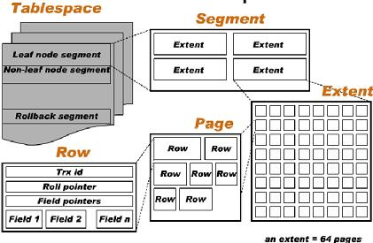

<!DOCTYPE html>
<html>
<head><meta name="generator" content="Hexo 3.8.0">
  <meta charset="utf-8">
  

  
  <title>Mysql InnoDB | Imoko</title>
  <meta name="viewport" content="width=device-width, initial-scale=1, maximum-scale=1">
  <meta name="description" content="InnoDB中数据是如何存储的system tablespace : 一个数据文件，用来存储一个或多个InnorDB 表 以及相关的 索引。  定义InnoDB数据目录 重做日志在InnoDB的数据目录下，会有2个文件：ib_logfile0，ib_logfile1，他们就是重做日志（redo log）。日志的大小会影响数据库的性能。写入的时候，是先写入redo log buffer，然后按照一定">
<meta property="og:type" content="article">
<meta property="og:title" content="Mysql InnoDB">
<meta property="og:url" content="http://yoursite.com/2018/04/11/DB_mysql_innoDB/index.html">
<meta property="og:site_name" content="Imoko">
<meta property="og:description" content="InnoDB中数据是如何存储的system tablespace : 一个数据文件，用来存储一个或多个InnorDB 表 以及相关的 索引。  定义InnoDB数据目录 重做日志在InnoDB的数据目录下，会有2个文件：ib_logfile0，ib_logfile1，他们就是重做日志（redo log）。日志的大小会影响数据库的性能。写入的时候，是先写入redo log buffer，然后按照一定">
<meta property="og:locale" content="default">
<meta property="og:image" content="http://yoursite.com/2018/04/11/DB_mysql_innoDB/image-20180412010618020.png">
<meta property="og:updated_time" content="2018-11-22T06:31:42.000Z">
<meta name="twitter:card" content="summary">
<meta name="twitter:title" content="Mysql InnoDB">
<meta name="twitter:description" content="InnoDB中数据是如何存储的system tablespace : 一个数据文件，用来存储一个或多个InnorDB 表 以及相关的 索引。  定义InnoDB数据目录 重做日志在InnoDB的数据目录下，会有2个文件：ib_logfile0，ib_logfile1，他们就是重做日志（redo log）。日志的大小会影响数据库的性能。写入的时候，是先写入redo log buffer，然后按照一定">
<meta name="twitter:image" content="http://yoursite.com/2018/04/11/DB_mysql_innoDB/image-20180412010618020.png">
  
    <link rel="alternate" href="/atom.xml" title="Imoko" type="application/atom+xml">
  
  
    <link rel="icon" href="/favicon.png">
  
  
    <link href="//fonts.googleapis.com/css?family=Source+Code+Pro" rel="stylesheet" type="text/css">
  
  <link rel="stylesheet" href="/css/style.css">
</head>
</html>
<body>
  <div id="container">
    <div id="wrap">
      <header id="header">
  <div id="banner"></div>
  <div id="header-outer" class="outer">
    <div id="header-title" class="inner">
      <h1 id="logo-wrap">
        <a href="/" id="logo">Imoko</a>
      </h1>
      
    </div>
    <div id="header-inner" class="inner">
      <nav id="main-nav">
        <a id="main-nav-toggle" class="nav-icon"></a>
        
          <a class="main-nav-link" href="/">Home</a>
        
          <a class="main-nav-link" href="/archives">Archives</a>
        
      </nav>
      <nav id="sub-nav">
        
          <a id="nav-rss-link" class="nav-icon" href="/atom.xml" title="RSS Feed"></a>
        
        <a id="nav-search-btn" class="nav-icon" title="Search"></a>
      </nav>
      <div id="search-form-wrap">
        <form action="//google.com/search" method="get" accept-charset="UTF-8" class="search-form"><input type="search" name="q" class="search-form-input" placeholder="Search"><button type="submit" class="search-form-submit">&#xF002;</button><input type="hidden" name="sitesearch" value="http://yoursite.com"></form>
      </div>
    </div>
  </div>
</header>
      <div class="outer">
        <section id="main"><article id="post-DB_mysql_innoDB" class="article article-type-post" itemscope="" itemprop="blogPost">
  <div class="article-meta">
    <a href="/2018/04/11/DB_mysql_innoDB/" class="article-date">
  <time datetime="2018-04-10T16:00:00.000Z" itemprop="datePublished">2018-04-11</time>
</a>
    
  </div>
  <div class="article-inner">
    
    
      <header class="article-header">
        
  
    <h1 class="article-title" itemprop="name">
      Mysql InnoDB
    </h1>
  

      </header>
    
    <div class="article-entry" itemprop="articleBody">
      
        <h3 id="InnoDB中数据是如何存储的"><a href="#InnoDB中数据是如何存储的" class="headerlink" title="InnoDB中数据是如何存储的"></a>InnoDB中数据是如何存储的</h3><p><strong>system tablespace</strong> : 一个数据文件，用来存储一个或多个InnorDB <strong>表</strong> 以及相关的 <strong>索引</strong>。</p>
<p></p>
<h3 id="定义"><a href="#定义" class="headerlink" title="定义"></a>定义</h3><p>InnoDB数据目录</p>
<h3 id="重做日志"><a href="#重做日志" class="headerlink" title="重做日志"></a>重做日志</h3><p>在InnoDB的数据目录下，会有2个文件：ib_logfile0，ib_logfile1，他们就是重做日志（redo log）。日志的大小会影响数据库的性能。写入的时候，是先写入redo log buffer，然后按照一定的条件写入日志文件。从缓存写入磁盘的时候，是以512字节（一个扇区）为单位写入的。因为扇区是写入的最小单元，所以写入必定成功。从缓存写入磁盘，有几种选择：</p>
<ul>
<li>0 事物提交，不将重做日志写入磁盘，等待主线程每秒的刷新</li>
<li>1 事物提交，写入磁盘，并调用fsync</li>
<li>2 事物提交，写入磁盘，不fsync，其实是写入的文件系统的缓存。</li>
</ul>

      
    </div>
    <footer class="article-footer">
      <a data-url="http://yoursite.com/2018/04/11/DB_mysql_innoDB/" data-id="cjos8tzgi0003rkwkv8970rp2" class="article-share-link">Share</a>
      
      
    </footer>
  </div>
  
    
<nav id="article-nav">
  
    <a href="/2018/04/18/Concurrency/" id="article-nav-newer" class="article-nav-link-wrap">
      <strong class="article-nav-caption">Newer</strong>
      <div class="article-nav-title">
        
          Concurrency
        
      </div>
    </a>
  
  
    <a href="/2018/04/07/TheLittleBookOfSemaphores/" id="article-nav-older" class="article-nav-link-wrap">
      <strong class="article-nav-caption">Older</strong>
      <div class="article-nav-title">The Little Book of Semaphores</div>
    </a>
  
</nav>

  
</article>

</section>
        
          <aside id="sidebar">
  
    

  
    

  
    
  
    
  <div class="widget-wrap">
    <h3 class="widget-title">Archives</h3>
    <div class="widget">
      <ul class="archive-list"><li class="archive-list-item"><a class="archive-list-link" href="/archives/2018/11/">November 2018</a></li><li class="archive-list-item"><a class="archive-list-link" href="/archives/2018/10/">October 2018</a></li><li class="archive-list-item"><a class="archive-list-link" href="/archives/2018/08/">August 2018</a></li><li class="archive-list-item"><a class="archive-list-link" href="/archives/2018/07/">July 2018</a></li><li class="archive-list-item"><a class="archive-list-link" href="/archives/2018/05/">May 2018</a></li><li class="archive-list-item"><a class="archive-list-link" href="/archives/2018/04/">April 2018</a></li></ul>
    </div>
  </div>


  
    
  <div class="widget-wrap">
    <h3 class="widget-title">Recent Posts</h3>
    <div class="widget">
      <ul>
        
          <li>
            <a href="/2018/11/22/Java_synchronizer/">JVM Synchronizer</a>
          </li>
        
          <li>
            <a href="/2018/11/22/DBs_mysql_locks/">Mysql Locks</a>
          </li>
        
          <li>
            <a href="/2018/11/22/BTreeStruct/">B-tree数据结构</a>
          </li>
        
          <li>
            <a href="/2018/11/22/hystrix/">Hystrix简介</a>
          </li>
        
          <li>
            <a href="/2018/11/22/consul-simple/">Consul简介</a>
          </li>
        
      </ul>
    </div>
  </div>

  
</aside>
        
      </div>
      <footer id="footer">
  
  <div class="outer">
    <div id="footer-info" class="inner">
      &copy; 2018 Tao<br>
      Powered by <a href="http://hexo.io/" target="_blank">Hexo</a>
    </div>
  </div>
</footer>
    </div>
    <nav id="mobile-nav">
  
    <a href="/" class="mobile-nav-link">Home</a>
  
    <a href="/archives" class="mobile-nav-link">Archives</a>
  
</nav>
    

<script src="//ajax.googleapis.com/ajax/libs/jquery/2.0.3/jquery.min.js"></script>


  <link rel="stylesheet" href="/fancybox/jquery.fancybox.css">
  <script src="/fancybox/jquery.fancybox.pack.js"></script>


<script src="/js/script.js"></script>


  </div>
</body>
</html>